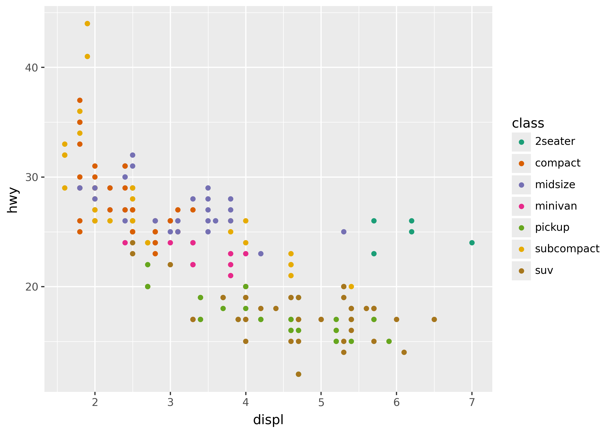
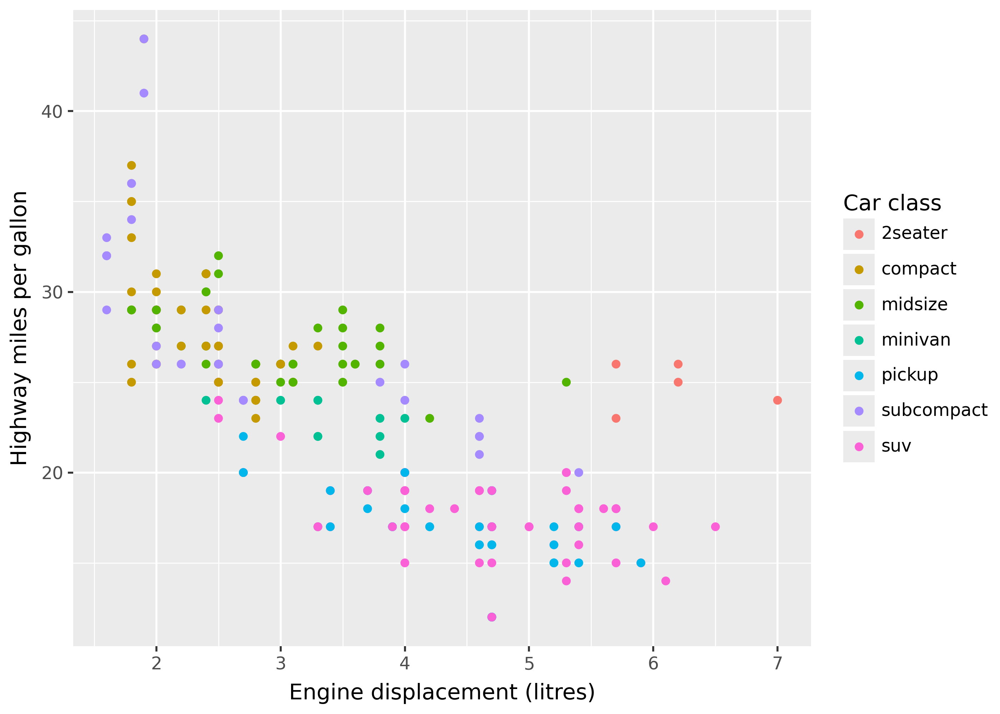
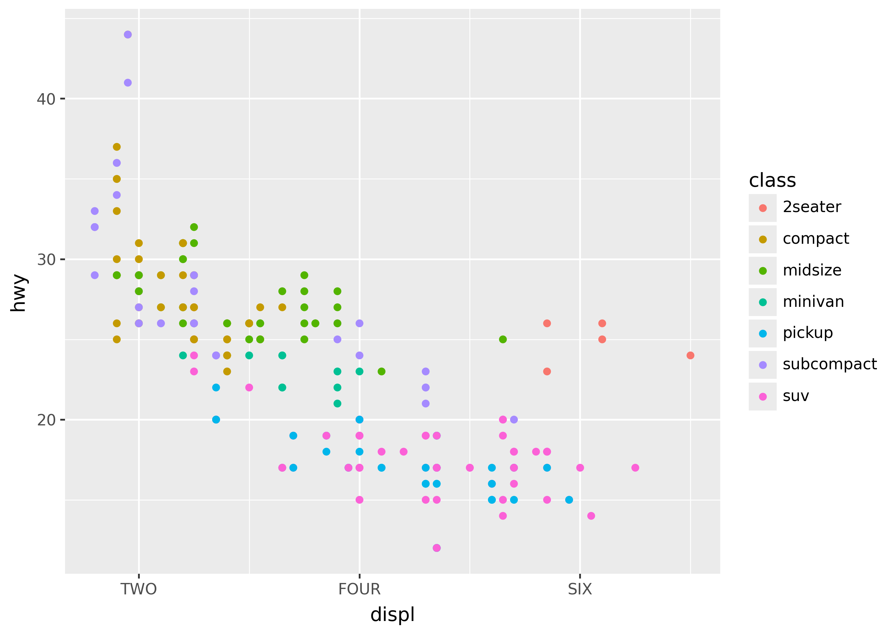
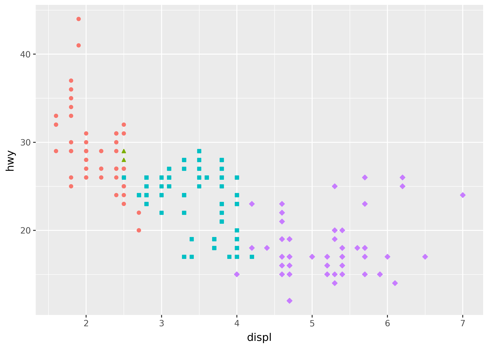
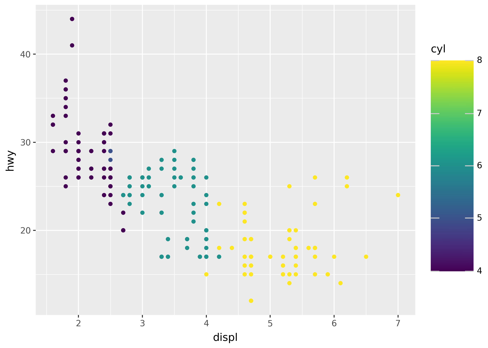

from plotnine import *
from plotnine.data import mpgScales, legends, and guides
Scales specify how aesthetic mappings are ultimately styled as colors, shapes, positions, sizes, and more. This includes choosing the colors used or scaling the size of points based on values of data.
Scale functions follow the naming pattern scale_{aesthetic}_{type}, where aesthetic is the name of the mapping (e.g. x, y, fill, shape), and type is the type of scale (e.g. continuous, discrete, color, shape).
Plotnine produces a legend automatically, which tells viewers how to map scale values back to the underlying data. These mappings back to data are called guides.
You will learn
- How to apply a custom color palette.
- How to choose between discrete, continuous, and manual scales.
- How to log transform x- and y-axes.
- How to customize x- and y-axis, and legend names.
- How to restrict the range of axes and color palettes.
- How to customize guide boxes in legends.
Key points
- Scale functions follow the pattern
scale_{aesthetic}_{type}(e.g.scale_color_continuous) - Scales have default types based on the aesthetic and data.
- Scales have an identity type that uses data values directly.
- Position scale types include log and reverse.
- Common scale arguments:
name=sets guide names.values=sets manual styles (e.g. color or shape).breaks=sets pieces like axis ticks.limits=restricts the range of the scale.labels=sets custom labels for breaks.
- Legends can be merged by giving scales the same name.
theme(legend_position=...)sets the position of the legend.- The
guide_*()functions customize pieces like reversing a colorbar.
Setup
Scale basics
In order to illustrate scales, we’ll show two very different uses: manually mapping values of data to colors, and selecting a color palette.
For manually mapping values to colors, we can use a manual type scale. For example, the code below uses scale_color_manual() to map two values in the class column to classes to red and blue.
(
ggplot(mpg, aes("displ", "hwy", color="class"))
+ geom_point()
+ scale_color_manual(
name="Car class",
breaks=["2seater", "compact"],
values=["red", "blue"],
)
)
Notice that “2seater” is red, “compact” is blue, and all other points are grey. The box on the right side of the plot with “Car class” in it is the legend. The piece inside it showing the colors with “2seater” and “compact” labeled is called a guide.
Generally, when using scales you’ll often want to use a scale that can automatically map values to colors. For example, scale_color_brewer() automatically applies a ColorBrewer palette.
(
ggplot(mpg, aes("displ", "hwy", color="class"))
+ geom_point()
+ scale_color_brewer(type="qual", palette=2)
)Notice that there are 7 colors in the plot, one for each level of the class column.
Scale parts
Scales have many parts, including the overall guide, breaks, break labels, and break values (shown below).
Notice the pieces marked in the diagram above:
- Guide: the x-axis, y-axis, and the color guide on the right.
- Breaks: the data points where pieces like labels are applied.
- Break labels: the text displayed for each break.
- Break values: pieces like the position on the axis, or key color in the color guide for a break.
Varieties of scales
Default scales
Different scale types are applied by default, depending on the kind of data being mapped. For example, scale_color_continuous() is the default for numeric data, but scale_color_discrete() is the default for string data.
The plots below illustrate this for the continuous cyl column, by plotting it as is on the left, and using the special "factor(cyl)" syntax to cast it to discrete on the right.
p = ggplot(mpg, aes("displ", "hwy")) + theme_grey(base_size=20)
# defaults to scale_color_continuous
p + geom_point(aes(color="cyl"))
# defaults to scale_color_discrete
p + geom_point(aes(color="factor(cyl)"))
Position scales
The position scales for the x- and y-axis also have many extra transformations available. For example, reversing or log transforming.
(ggplot(mpg, aes("displ", "hwy")) + geom_point() + scale_x_reverse() + scale_y_log10())Identity type
Finally, the scale identity type uses the values of the data as styles directly. For example, the code below sets the color of points to the values in the my_color column.
import pandas as pd
df = pd.DataFrame(
{
"x": [1, 2, 3],
"y": [1, 2, 3],
"my_color": ["red", "blue", "green"],
}
)
(ggplot(df, aes("x", "y", color="my_color")) + geom_point(size=5) + scale_color_identity())name= to set guide (legend) labels
Use the name= argument to scale functions to set the label of that scale’s guide.
(
ggplot(mpg, aes("displ", "hwy", color="class"))
+ geom_point()
+ scale_x_continuous(name="Engine displacement (litres)")
+ scale_y_continuous(name="Highway miles per gallon")
+ scale_color_discrete(name="Car class")
)Notice that the x-axis, y-axis, and color guides all have names set. While the guide color is in the legend on the right, the x- and y-axis guides are on the bottom and left of the plot.
labs() shortcut
The labs() function is a convenient way to set names for guides in one place, along with other pieces like a title.
(
ggplot(mpg, aes("displ", "hwy", color="class"))
+ geom_point()
+ labs(
title = "Use labs() to quickly set labels",
x = "Engine displacement (litres)",
y = "Highway miles per gallon",
color = "Car class"
)
)
values= for manual styles
Use the values= argument to manually specify stylings like colors, shapes, or sizes of the scale. For example, the plot below manually sets point shapes (see the aesthetic specification for shape value options).
keep_classes = ["2seater", "compact", "midsize"]
(
mpg[mpg["class"].isin(keep_classes)]
>> ggplot(aes("displ", "hwy", shape="factor(cyl)"))
+ geom_point()
+ scale_shape_manual(values=[".", "o", "v", ">"])
)breaks= for axis ticks, color bins
p = ggplot(mpg, aes("displ", "hwy", color="class")) + geom_point()
p + scale_x_continuous(breaks = [4, 4.5, 5, 5.5])limits= for restricting data range
from plotnine.data import huron
p = ggplot(huron, aes("year", "level")) + geom_line() + theme_grey(base_size=26)
p + labs(title="default")
p + scale_x_continuous(limits=[1950, 1960]) + labs(title="zoom in")
p + scale_x_continuous(limits=[1800, 2000]) + labs(title="zoom out")
p = ggplot(huron, aes("year", "level", color="year")) + geom_line()
p
p + scale_color_continuous(limits=[None, 1900])labels= for break labels
Use the labels= argument to set custom labels for breaks. This argument supports either a function that operates on a list of breaks, or a list of labels.
For example, the plot below sets the color labels to uppercase.
p = ggplot(mpg, aes("displ", "hwy", color="class")) + geom_point()
p + scale_color_discrete(labels=lambda breaks: [s.upper() for s in breaks])
The plot below manually sets the x-axis breaks and labels.
p + scale_x_continuous(breaks = [2, 4, 6], labels = ["TWO", "FOUR", "SIX"])Legend merging
Sometimes aesthetics mapped to the same variable have their guides merged. For example, color and shape might be shown on the same guide. To split a merged guide, give the scales their own names.
p = (
ggplot(mpg, aes("displ", "hwy", color="factor(cyl)", shape="factor(cyl)"))
+ geom_point()
+ theme_grey(base_size=20)
)
p + labs(title="Unmerged")
p + labs(title="Merged") + scale_shape_discrete(name="Shape")

Legend position
Use theme(legend_position=...) argument to set the position of the legend in a plot. The options are "none", "left", "right", "top", and "bottom".
p = (
ggplot(mpg, aes("displ", "hwy", color="factor(cyl)", shape="factor(cyl)"))
+ geom_point()
)
p + theme(legend_position="top")
p + theme(legend_position="none")Guide customization
Customize guides by passing arguments like guide_colorbar() or guide_legend() to the guides() function.
The example below uses guide_colorbar() to reverse the colorbar (in the legend on the right; note the styles are the same, but the way the guide colorbar is shown is reversed).
p = (
ggplot(mpg, aes("displ", "hwy", color="cyl"))
+ geom_point()
+ theme(legend_key_size=30)
)
p
p + guides(color=guide_colorbar(reverse=True))
Here’s a funky example that merges guides for color, size, and shape by giving them all the same title in the legend.
import pandas as pd
from plotnine import *
ser = list(map(str, range(5)))
df = pd.DataFrame({"x": ser, "y": ser, "p": ser, "q": ser, "r": ser})
(
ggplot(df, aes("x", "y", color="p", size="q", shape="r"))
+ geom_point()
+ labs(title="Merged color, size, and shape guides")
+ guides(
color=guide_legend("THE GUIDE"),
size=guide_legend("THE GUIDE"),
shape=guide_legend("THE GUIDE"),
)
)